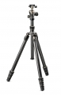

捷信为庆祝品牌诞生一百周年而推出了代表其领先科技和工艺的限量纪念款产品，一百周年纪念版旅行者三脚架。这款三脚架在三角铸件处引入了全新的镁合金材质，黑色和钛灰色的细节设计使其外观非常典雅时尚。此款产品具有捷信新款旅行者1系的技术特点，包括先进的Carbon eXact碳纤维脚管和180°反折设计，具有非凡强度；旅行者系列的G-Lock旋锁结构，使其更紧凑、稳固和更符合人体工程学；全新的中线球型云台，可实现卓越的平滑度和精度。